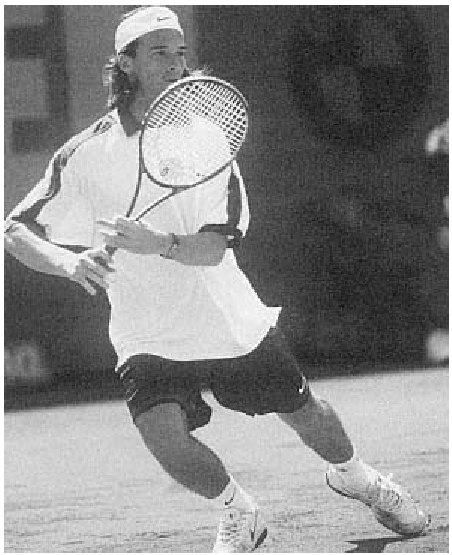
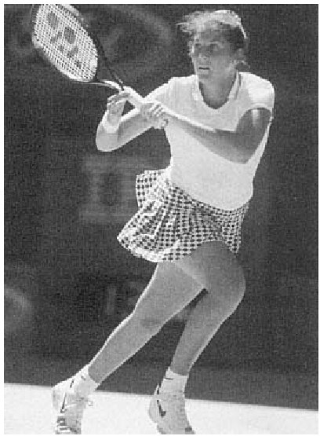
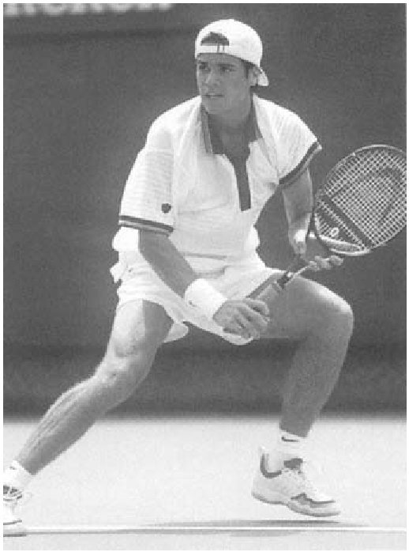
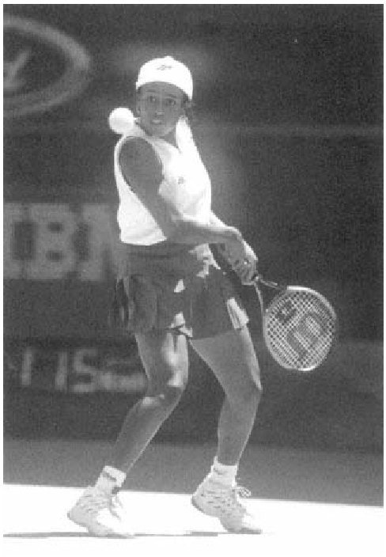
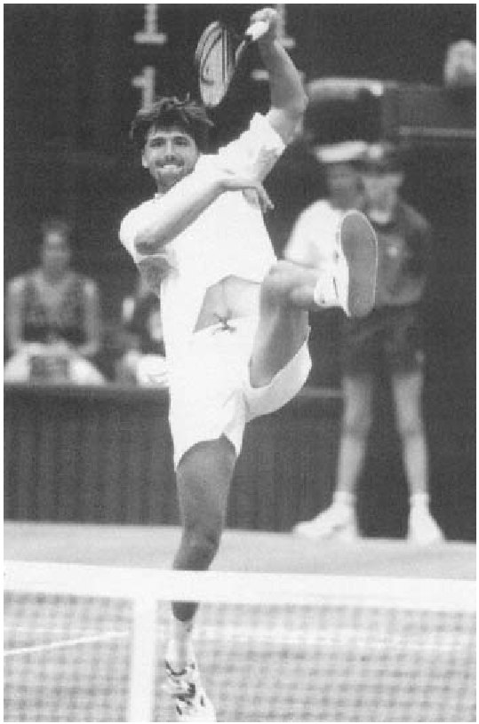
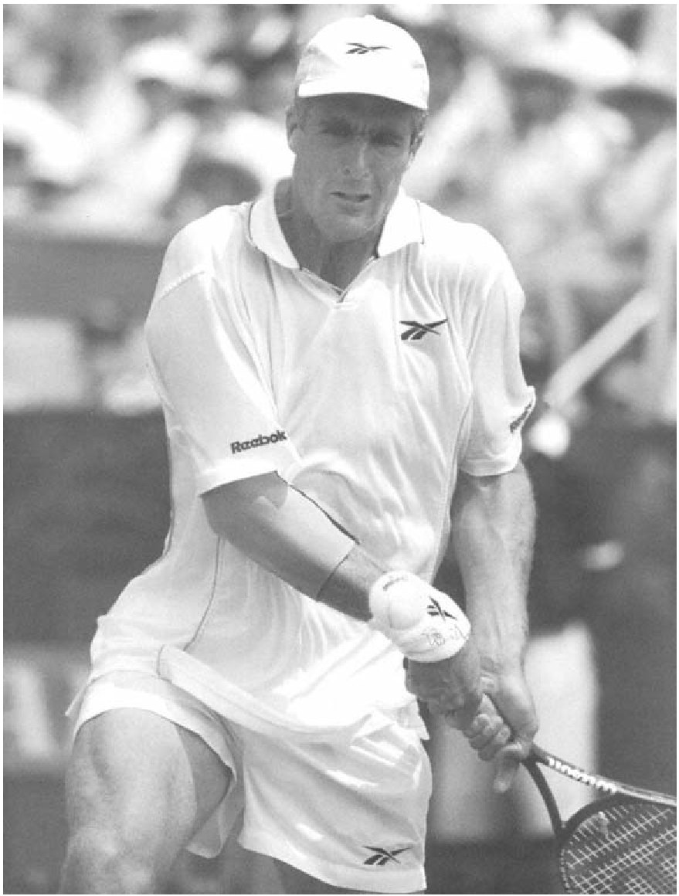

Những cú đánh mặt đất như thuận tay và trái tay là cốt lõi của môn quần vợt. Nếu bạn cố gắng trả lại cú giao bóng của đối thủ vào sâu trong sân hoặc nếu đối thủ của bạn trả giao bóng sâu cho bạn, rất có thể bạn sẽ chuyển sang chơi kiểu đánh chạm đất trong một thời gian cho đến khi một trong hai bạn mắc lỗi, đánh trúng người thắng cuộc hoặc quyết định vào lưới.
Đột quỵ mặt đất
Các cú đánh chạm đất, góc, chuyền bóng, đập bóng, lốp bóng và chuyền bóng, như giao bóng và trả bóng (chương 2), là một phần của gia đình các cú đánh xoay người. Nguồn lực chính là khả năng xoay khi thực hiện các cú vung vợt.
Quan sát
Hướng con mắt thuận của bạn vào các cú đánh mặt đất của đối thủ. Nếu bạn thuận cùng một bên (mắt phải và tay phải hoặc mắt trái và tay trái), bạn có thể gặp những quả bóng đánh về phía thuận tay của mình bằng cách sử dụng tư thế mở. Giữ đầu thẳng càng lâu càng tốt để giữ mắt chủ đạo của bạn nhìn vào quả bóng. Về phía trái tay, điều tương tự cũng đúng nếu bạn thuận mắt trái. Bạn có thể có tư thế đứng mở hơn nếu bạn thuận tay trái bằng hai tay hoặc giữ đầu về phía trước nhiều hơn nếu bạn là người thuận tay. Người chơi thường dễ dàng đánh trúng đường biên ở phía chiếm ưu thế của họ.
Giả sử bạn vừa chạy đối thủ của mình ra xa với một góc được đặt hoàn hảo. Cú đánh trả tuyệt vọng đang nảy lên ở giữa sân của bạn, và nó treo ở đó như một quả mận lớn. Người chơi còn lại đang cố gắng trở lại vị trí. Bạn có một sân rộng rãi để đánh. Bạn di chuyển xung quanh quả bóng để sắp xếp một cú thuận tay dễ dàng. Bạn chỉ cần đặt quả bóng đi. Bạn thực hiện cú vung vợt ra sau đã đo của mình và . . . bạn đưa bóng vào lưới.
Chuyện gì đã xảy ra thế? Rất có thể bạn đã nhìn thấy quả bóng bằng con mắt không thuận của mình. Trong lúc vội vàng xoay người để hạ gục, bạn đã quay đầu lại, để nhầm mắt vào quả bóng. Kết quả là bạn nhận được thông tin không chính xác về vị trí của quả bóng. Không quá chính xác, vừa đủ để thuyết phục cơ thể bạn vung vào một quả bóng tưởng tượng cách quả bóng thật vài inch. Chỉ vừa đủ để đánh bóng vào khung hình chứ không phải điểm ngọt.
Khi bạn nhận được dữ liệu chính xác từ mắt thuận của mình, bạn sẽ có thể đọc được chuyển động của quả bóng - hướng, độ xoáy, chiều cao, độ sâu và tốc độ của nó - cũng như vị trí của bạn và đối thủ trên sân. Những gì bạn làm với thông tin này là vấn đề về nhận thức chiến thuật, điều mà tôi sẽ đề cập trong suốt chương này liên quan đến các cú chạm đất, góc, đường chuyền, đập bóng và lốp bóng.
Di chuyển
Khi thực hiện các cú đánh trên mặt đất, tốt hơn hết bạn nên di chuyển theo mọi hướng, về phía bóng, ra xa bóng, xung quanh bóng. Đó là một điệu nhảy; bạn và quả bóng giống như Fred và Ginger. Quả bóng sẽ nhảy, nhúng và lặn. Bạn cần phải ở đó với nó.
Với bất kỳ điệu nhảy nào, bạn cần phải học các bước. Có rất nhiều thực hành cơ bản cần thực hiện trước khi bạn phát hành cổ phiếu ra công chúng. Dưới đây là các bước đột phá cơ bản:
Bộ phận chia đôi xoay cơ thể của bạn và lấy lại vợt nhanh chóng (xem ảnh của Carlos Moya ở trang 47)
Tách bước ra - bước đầu tiên đưa chân lên gần bóng nhất
Tách ngẫu nhiên các bước theo mọi hướng
Tách từng chạy nước rút xoay khối để đưa bóng đi xa hơn
Trượt theo lượt-chạy nước rút — trên đất sét
Lưu ý rằng tôi bắt đầu mỗi lần chơi bằng một Bước nhún tách chân chuẩn bị biệt; điều này làm cho đôi chân của bạn di chuyển. Việc Xoay nguyên khối thân trên sẽ đưa cơ thể của bạn vào vị trí để xoay nhanh. Các bước xáo trộn điều chỉnh vị trí của bạn. Đối với những quả bóng đưa bạn đi rộng, việc xáo trộn chéo cho phép bạn bao phủ rất nhiều mặt đất trong bước đầu tiên của mình. Nếu bạn phải băng qua toàn bộ sân, bạn có thể xoay người và chạy nước rút như Monica Seles trình bày ở trang 47.
Sau khi bạn đánh bóng, trận đấu tiếp tục khi bạn hồi phục, trở lại vị trí sẵn sàng. Ở đây, việc xáo trộn bên sẽ giúp bạn để mắt đến đối thủ trong khi vào vị trí và vẫn cho phép bạn thay đổi hướng nhanh chóng nếu cần.
Thực hành từng bước một thật khó chịu; cảm giác lúng túng, không thích chơi chút nào. Nhưng đó là điều bạn phải thành thạo ở mọi cấp độ. Cơ thể của bạn phải trải qua các bước. Khi bạn đổ mồ hôi khi luyện tập những động tác này, hãy thường xuyên dừng lại để xem một trận đấu quần vợt chuyên nghiệp trên TV. Tắt âm thanh và bỏ qua bản nhạc, chỉ quan sát chuyển động. Bạn có thể nhận ra lượt chuyển đơn vị, chuyển đổi chéo, Bước nhún tách chân chuẩn bị, nhưng giờ đây tất cả các bước di chuyển chiến thuật đó đang hòa quyện thành một chuỗi linh hoạt. Chuỗi này nối tiếp chuỗi khác khi người chơi di chuyển vào vị trí, điều chỉnh, xoay cơ thể, chuyển trọng lượng, thực hiện cú vung và hồi phục để xem quả bóng tiếp theo đang đến gần.
Điều chỉnh

Chia xoay khối thân trên với Carlos Moya.

Chia xoay khối thân trên với Carlos Moya.
Như đã giải thích ở chương 2, xếp hàng có nghĩa là đặt chân gần quả bóng nhất phía sau đường bay của quả bóng, ở vị trí thích hợp để toàn bộ cơ thể bạn thẳng hàng với quả bóng. Nếu bạn sắp xếp tốt, cú đánh của bạn sẽ gặp bóng trong vùng đánh mong muốn của bạn tại điểm tiếp xúc tốt nhất. Nếu bạn xếp hàng không đúng cách, bạn sẽ chạm tới bóng (hoặc quá gần nó) và cú đánh của bạn sẽ trở nên lộn xộn. Bạn biết cảm giác lái xe tồi tệ như thế nào nếu xe của bạn không được căn chỉnh đúng cách. Tương tự như vậy, những điều chỉnh bạn thực hiện trong việc xếp hàng là rất quan trọng đối với phần còn lại của trò chơi. Dưới đây là một số hướng dẫn để điều chỉnh căn chỉnh của bạn cho một số kiểu xoay:
thuận tay. Đặt chân phải của bạn (nếu bạn thuận tay phải). Sau đó, bước vào cú đánh của bạn bằng chân trái hoặc giữ tư thế mở. Tư thế mở buộc vai và cánh tay của bạn phải làm việc nhiều hơn nhưng nó giúp bạn nhìn thấy bóng lâu hơn.
Trái tay một tay. Bạn cũng có một sự lựa chọn ở đây. Về cơ bản, bạn có thể đảo ngược kiểu Cú thuận tay (thuận tay), đặt chân trái và bước vào cú đánh bằng chân phải (nếu bạn thuận tay phải). Điều này thường được thực hiện ở những cú Cú trái tay (trái tay) mà bạn đánh với xoáy lên hoặc cú đánh phẳng. Tuy nhiên, nếu bạn đang thái, hãy trồng chân phải. Trong trường hợp này, bạn có thể nhìn thấy một cách sống động các đường “line” thẳng hàng hoàn hảo từ chân phải thẳng lên hông, đến vai và đôi khi là cằm tựa vào vai.
Trái tay hai tay. Người chơi trái tay bằng hai tay có thể chọn xếp hàng trước bằng chân trái và khi rảnh rỗi, bước vào bằng chân phải (nếu thuận tay phải). Khi dang rộng để nhận bóng, người thuận hai tay có thể bước qua để xếp hàng bằng chân phải trước.
Điều chỉnh cú vung sau của bạn
Một cú Vung vợt ra sau (lấy đà) lớn có thể tăng thêm sức mạnh cho cú đánh của bạn, nhưng theo nghĩa đen thì có một điểm là cú trả giao bóng giảm dần. Bạn có thể mất thời gian và khả năng kiểm soát khi đưa vợt về quá xa. Nói chung, bạn nhận bóng càng khó thì cú đánh sau của bạn càng ngắn; Bóng càng dễ thì bạn càng có thể thêm nhiều cú đánh ngược.
Tất nhiên, các yếu tố khác cũng phát huy tác dụng, chẳng hạn như vị trí trên sân. Bạn càng ở xa lưới thì bạn càng cần phải vung vợt ra sau nhiều hơn. Nếu bạn ở gần lưới, bạn sẽ chỉ cần một cú vung vợt về phía sau ngắn để đưa bóng đến nơi bạn muốn, vì vậy độ chính xác quan trọng hơn sức mạnh. Ngoài ra, bạn sẽ đưa ra các lựa chọn vung vợt dựa trên tình huống trận đấu. Một cú Vung vợt ra sau (lấy đà) lớn sẽ đặt bạn vào trạng thái cố gắng vượt qua hàng rào, giống như một vận động viên bóng chày đang lao về phía hàng rào. Nếu bạn cần chơi phòng thủ, một cú vung vợt ra sau ngắn sẽ giúp bạn xác định thời điểm tiếp xúc dễ dàng hơn.
Xoay
Xoay là nguồn năng lượng chính của bạn khi thực hiện các cú chạm đất. Hông, vai và thân, xoay ngược chiều trên tư thế thể thao vững chắc, tạo ra rất nhiều năng lượng dự trữ.
thuận tay. Với cú thuận tay, cánh tay vợt kéo về phía sau và cánh tay kia giữ Trọng tâm cơ thể, tạo ra sự căng hoàn toàn trên phần thân trên. Ngay cả trong tư thế mở, khả năng xoay của phần thân trên và hông vẫn được thể hiện rõ ràng. Vai phải lùi về phía sau, gây căng qua ngực. Đây là động tác cuộn dây mà tôi đã nói đến, sự chuẩn bị cho chuyển động giống như sợi roi cung cấp sức mạnh cho các cú đánh của bạn. Vai vợt (phải) đó cuối cùng cũng giãn ra, xoay tròn cho đến khi thân vợt vuông góc với lưới.
Trái tay một tay. Nếu bạn xoay vai sớm để thực hiện cú Cú trái tay (trái tay), bạn sẽ có thể che giấu các bước di chuyển của mình khỏi đối thủ và cũng tạo ra sự căng cứng, mạnh mẽ của cơ lưng và cơ thân.
Chú ý cách cơ thể được xoay đến mức cằm thực sự tựa vào vai. Từ phía trước, bạn thực sự có thể nhìn thấy phía sau vai của người chơi. Khi bạn duỗi ra, tay trái sẽ quay lại theo hướng khác, như một cách để ổn định vai.

Tommy Haas lùi lại trong khi xoay hông và vai.
Trái tay hai tay. Như bạn sẽ thấy khi nhìn vào bức ảnh bên phải, ở đây cách xoay hơi khác một chút, đặc biệt là khi thả xoay. Khi vợt được kéo về phía sau bằng hai tay, cả hai vai sẽ duỗi thẳng về phía mục tiêu mong muốn, với cánh tay phải được sử dụng để điều khiển vợt và tay trái tăng thêm sức mạnh (đối với người chơi thuận tay phải). Điều này có thể được thực hiện từ thế đứng mở hoặc đóng. Cú trái tay bằng hai tay cũng giúp ngụy trang vì ban đầu tay của bạn bị cơ thể che khuất khỏi tầm nhìn của đối thủ. Sau đó, với hai tay, bạn có khả năng kiểm soát tốt hơn khi đánh vợt vào giây cuối cùng có thể và thay đổi hướng đánh của bạn.

Chandra Rubin trình diễn cú trái tay bằng hai tay.
Chuyển trọng lượng
Chuyển động trên các cú đánh trên mặt đất có thể và thực sự xảy ra từ các thế đứng mở và đóng. Bạn chọn chuyển trọng lượng của mình vào cú đánh bao nhiêu tùy thuộc vào ý định bắn của bạn và lượng thời gian bạn có để di chuyển vào cú đánh.
thuận tay. Xoay có thể là nguồn năng lượng chính trong các cú chạm đất, nhưng vẫn có trọng lượng được truyền đi. Đối với cú thuận tay phải, việc chuyển bóng diễn ra từ chân phải sang trái khi người chơi bước vào cú đánh. Trong tư thế đứng đóng, việc truyền trọng lượng thậm chí còn mạnh hơn, xảy ra trước khi tiếp xúc với bóng.
Trái tay. Ở cú Cú trái tay (trái tay) phải, bàn chân phải hơi hướng về phía trước một góc 45 độ để hông không bị chặn và có thể xoay vào cú đánh. Việc chuyển trọng lượng ở cú Cú trái tay (trái tay) diễn ra sớm hơn so với ở cú Cú thuận tay (thuận tay), từ chân trái sang phải và thường từ gót chân đến ngón chân ở bàn chân dẫn đầu (phải). Khi cú xoay gần hoàn thành, không có gì lạ khi thực hiện trái tay bằng hai tay khi thấy chân trái xoay qua, vuông góc với chân phải. Điều này cho thấy động tác xoay đã góp phần tạo nên lực của cú đánh; nó còn giúp người chơi hồi phục, lấy lại Trọng tâm cơ thể.
Vung vợt
Bây giờ bạn đã ở vị trí để vung vợt, bạn cần ghi nhớ những điều sau: (a) giữ cho cú vung của bạn mượt mà và (b) tăng tốc cú vung của bạn trên mặt đất và giữ yên đầu.
thuận tay. Từ tư thế thể thao ở tư thế sẵn sàng, bạn đã thực hiện tách bước và di chuyển đến quả bóng, điều chỉnh theo các yếu tố khác nhau trên đường đi; bạn đã đạt được khoảng cách đánh bóng lý tưởng, và bạn đã xoay người, lấy vợt về; và bạn bắt đầu chuyển trọng lượng của mình vào cú vung vợt và bung ra. Đóng băng khung hình ngay tại đó. Chuyện gì đang xảy ra với cái cú vung vợt vậy?
Khi vai bạn duỗi ra, vợt sẽ tụt lại phía sau. Độ trễ này gây ra sự căng thêm của cơ ngực và cơ vai được sử dụng để tạo ra tốc độ đầu vợt. Cũng lưu ý vị trí cổ tay của bạn, vểnh lên như búa trên súng lục, ở một góc từ 45 đến 90 độ. Hành động tải này bằng cổ tay cho phép kiểm soát tối ưu tại điểm tiếp xúc. Duy trì góc cổ tay này khi phần còn lại của cơ thể bạn duỗi ra. Hãy nhớ cổ tay và vợt của bạn là đuôi của roi. Khi vai của bạn vuông góc, hướng về mục tiêu và cánh tay của bạn đã đưa cổ tay về phía trước để tiếp xúc với quả bóng - sau đó thả lỏng góc của cổ tay. Bạn muốn giữ cho cổ tay của mình linh hoạt ở cuối cú vung, nhưng việc thả sớm góc cổ tay đó sẽ giúp cho roi không bị gãy với toàn bộ sức mạnh.
Việc theo dõi phụ thuộc vào ý định bắn của bạn. Rõ ràng khả năng theo dõi của bạn sẽ thay đổi nếu bạn đánh một góc, ứng biến với một quả bóng chỉ để vượt qua hoặc gặp Bóng ngon ăn (sitter) hoàn hảo ở giữa sân. Đối với một nét phẳng, chuyển động tiếp theo thông thường là hướng ra ngoài và hướng lên trên. Bạn đặt bóng càng xoáy và càng nâng thì đường vung vợt của bạn sẽ càng hướng lên trên. Việc thực hiện cú đánh tiếp theo sẽ phụ thuộc vào độ cao của quả bóng được chạm vào và hướng dự định, trong trường hợp đó, nếu t có thể qua vai hoặc thậm chí ngang cơ thể bạn đến hông đối diện.
Tất nhiên nhịp điệu và thời điểm là rất quan trọng để thực hiện một cú vung vợt tốt. Điều này sẽ được thảo luận nhiều hơn ở chương 4, nhưng đây là một cách tiếp cận đơn giản để bạn bắt đầu, nhờ sự giúp đỡ của Victor Tantalo trong cuốn sách USA Tennis Course (trang 56):
1. Hình dung khu vực đánh của bạn khi bóng di chuyển về phía bạn.
2. Nói "đợi" trong khi mắt và não của bạn đo quả bóng đang đến gần.
3. Khi bóng đến khu vực đánh của bạn, hãy nói "Ngay bây giờ!" Sau đó nhắm và đánh.
Trái tay một tay. Từ vị trí sẵn sàng của mình, bạn đã tách bước, hoàn thành một Xoay nguyên khối thân trên và di chuyển vào vị trí, xếp hàng trên quả bóng đang tới. Cơ thể bạn cuộn tròn đến mức đối thủ có thể nhìn thấy khoảng nửa lưng của bạn và cằm tựa vào vai bạn. Vợt của bạn cũng được cuộn lại, với mặt vợt mở.
Động tác Vung vợt ra sau (lấy đà) thẳng hoặc giật sẽ hiệu quả, tùy thuộc vào thời gian của bạn. Bạn đã sẵn sàng vung bóng, tiếp xúc ở phía trước cơ thể. Cổ tay của bạn bị khóa và chân của bạn bị uốn cong. Khi bạn duỗi ra, bạn vẫn nằm nghiêng về phía lưới. Quá trình theo dõi của bạn sẽ lâu hơn nhiều, tiếp tục hướng tới mục tiêu mong muốn của bạn.
Tín hiệu
Đặt và đánh
Đặt và kết thúc
Nhảy, nhảy, đánh
Bộ xáo trộn
Chạy và kết thúc
Chải và đánh
Ngắn, mở rộng, mở rộng đầy đủ, theo dõi, ngắn và nhấn
Di chuyển bàn chân của bạn
Đi đến quả bóng
Hãy luôn cảnh giác như một tiền vệ
Thực hiện các bước ngắn, nhanh chóng
Đợi và đánh
Trái tay hai tay. Bạn sử dụng cùng tư thế sẵn sàng, tách bước, di chuyển và xếp hàng. Xoay vai, bạn cầm vợt về bằng cả hai tay. Sau đó, bạn bước vào cú đánh, chân phải chỉ vào quả bóng. Việc thả lỏng thân mình và chuyển động lái của tay trái sẽ mang lại một lượng sức mạnh to lớn. Cú đánh tiếp tục hướng về phía mục tiêu, cho đến khi cánh tay của bạn uốn cong, cho phép đầu vợt kết thúc phía trên khuỷu tay mở rộng của bạn.
Ở bên trái là một số tín hiệu giúp bạn thực hiện các cú đánh trên mặt đất. Chúng có thể hỗ trợ bạn tính toán thời gian hoặc đơn giản là nhắc nhở bạn về các khía cạnh chính của cú đánh.
Khắc phục sự cố đột quỵ mặt đất
Tôi đang lao theo quả bóng nhưng không chạm tới được.
Nhìn thấy: Xác định nhanh hơn các cách điều khiển bóng khác nhau (hướng, độ cao, độ xoáy, độ sâu và tốc độ) trong ý định đánh của đối thủ. Ghi lại cú đánh mà bạn đã gửi trước khi nhận được đòn đáp trả buộc bạn phải thực hiện cú tấn công. Khả năng đoán trước (anticipation) sự trở lại tương tự vào lần tới.
Chuyển động: Chuyển động ban đầu của bạn có thể không đủ mạnh hoặc bạn đã chọn động tác bằng chân không phù hợp với tình huống hoặc bạn không hồi phục tốt sau cú đánh cuối cùng. Lần chụp cuối cùng của bạn cũng có thể là nguyên nhân của vấn đề.
Quả bóng không đi tới nơi tôi nhắm tới; Tôi không thể kiểm soát cú đánh.
Thị giác: Hình dung quả bóng đang đi tới mục tiêu mà bạn đã chọn.
Điều chỉnh: Để điều khiển hướng, hãy căn chỉnh mắt, bàn chân, hông, vai, tay và vợt của bạn với quả bóng.
Vung vợt: Kiểm soát đầu vợt. Làm việc theo dõi. Nếu bạn dừng cú đánh tiếp theo một cách đột ngột, cú đánh của bạn sẽ bị hack, thực sự là làm giảm Tốc độ đầu vợt trước khi bạn đánh bóng. Điều này cho phép quả bóng tới (chứ không phải cú đánh của bạn) xác định nơi nó sẽ đi tiếp theo. Nếu bạn đang sử dụng cú Cú trái tay (trái tay) bằng một tay, bạn có thể không đủ thể lực, dẫn đến việc xoay người quá mức, mất kiểm soát đầu vợt, không có khả năng tạo xoáy và gặp bóng quá muộn. Kiểm tra với chuyên gia giảng dạy được chứng nhận để xem liệu bạn có nên chuyển sang trái tay bằng hai tay hay không.
Tôi đang đánh vào lưới.
Điều chỉnh: Đi dưới bóng bằng cách uốn cong đầu gối và chạm bóng trong vùng tấn công mong muốn của bạn. Đôi khi người chơi gặp bóng quá cao hoặc quá thấp. Đặt tay vợt của bạn trên quả bóng sao cho tay có thể thả xuống dưới quả bóng để tăng thêm lực nâng thích hợp. Hãy nhắm mục tiêu cao hơn trên lưới và thử nhiều xoáy lên hơn. Kiểm tra điều khiển bóng: chiều cao, độ xoáy, hướng, độ sâu và tốc độ. Thêm chiều cao và độ xoáy, để có chiều sâu hơn. Nếu sự cố vẫn tiếp diễn, hãy thử giảm tốc độ và quay nhiều hơn.
Chuyển: Bạn có thể duỗi thẳng chân quá sớm. Điều này sai thời điểm giải phóng sức mạnh khi chuyển trọng lượng của bạn. Vào thời điểm bạn đánh bóng, sức mạnh của chân bạn đã được sử dụng. Có lẽ bạn chuyển trọng lượng quá sớm hoặc thả lỏng quá sớm, chạm bóng quá xa phía trước. Một số người chơi khi bung vợt đã nhúng vai xuống khiến vợt bị hướng xuống dưới.
Vung vợt: Kiểm tra kỹ năng vung vợt và đường vung vợt của bạn. Đầu vợt của bạn không ở dưới bóng. Rèn luyện kỹ năng xoay. Tay cầm của bạn có thể quá chặt. Đường vung vợt của bạn có thể quá trực tiếp hoặc từ cao xuống thấp. Hãy thử nâng bóng cao hơn lưới bằng đường xoay từ thấp đến cao. Mặt vợt cũng có thể bị đóng lại khi tiếp xúc bóng, hoặc bạn đang vội tính thời điểm thực hiện cú đánh, khiến tiếp xúc quá xa về phía trước. Kiểm tra kỹ năng điều chỉnh của bạn và thêm độ xoáy nếu cần thiết. Ngoài ra, hãy kiểm tra điểm tiếp xúc của bạn - không quá xa hoặc quá xa cơ thể bạn.
Bóng đi ngắn trong sân. Tôi không đánh nó một cách sạch sẽ.
Thị giác: Đầu bạn có thể bị giật hoặc cử động quá mức, ảnh hưởng đến mắt.
Chuyển động: Mục tiêu cao hơn và sâu hơn trên lưới. Hoặc thay đổi vòng quay.
Xoay: Kiểm tra tư thế đánh của bạn. Đừng chặn hông của bạn bằng cách bước bằng chân trước trên cơ thể vì điều này cản trở sự xoay thích hợp. Ở bên trái tay, bước ra bằng chân trước khoảng 45 độ để xoay thích hợp. Giữ tay không cầm vợt của bạn trên cổ vợt lâu hơn. Điều này sẽ tự động chuyển vai cho bạn. Nếu đây là vấn đề, hãy thử tư thế mở (điều này có thể xảy ra ở cả thuận tay hoặc trái tay).
Chuyển: Sao lưu một vài bước. Bạn có thể cần thêm thời gian để chuyển trọng lượng vào cú đánh.
Tôi luôn ở quá gần quả bóng để có thể thực hiện được một cú đánh chắc chắn.
Điều chỉnh: Luyện tập cách di chuyển quả bóng vào đúng vị trí để thực hiện cú xoay hoàn toàn. Những người chơi không làm điều này có xu hướng kéo vợt ngang qua quả bóng, dẫn đến xoáy ngang. Họ thường đánh bóng đi chệch cột dọc.
Cú đánh nền (groundstroke) của tôi đi rộng.
Điều chỉnh: Đừng nhắm quá gần đường kẻ; hãy cho mình một số sai sót.
Xoay: Đường xoay của bạn có thể bị đảo ngược, vung từ ngoài vào trong, tạo ra xoáy ngang cho bóng. Hãy thử vung bóng từ trong ra ngoài để tại điểm tiếp xúc, bạn chắc chắn rằng mình đang đánh từ bên ngoài quả bóng và ra phía trước cơ thể. Mặt ngoài của quả bóng luôn là phía xa bạn nhất (tức là phía bên phải nếu nó ở bên phải bạn). Khi chạm bóng ở bên ngoài, bạn sẽ đánh bóng về phía giữa sân một cách tự nhiên. Mục tiêu tránh xa các dòng.
Cú đánh nền (groundstroke) của tôi kéo dài.
Điều chỉnh: Điều chỉnh vị trí của bạn với quả bóng. Làm việc với các cách kết hợp xoay và chuyển khác nhau để có được lượng lực thích hợp trong cú đánh của bạn. Vợt của bạn có thể quá lỏng lẻo. Giảm tốc độ và tăng thêm độ xoáy. Mục tiêu thấp hơn trên lưới.
Vung vợt: Rút ngắn cú Vung vợt ra sau (lấy đà) của bạn. Mặt vợt của bạn có thể quá hở khi tiếp xúc với bóng. Cú vung vợt của bạn có thể quá lớn. Dây của bạn có thể quá lỏng lẻo. Bạn có thể đã đánh vào vùng tấn công quá cao. Một đường vung vợt khác có thể tạo ra nhiều xoáy hơn. Hãy chắc chắn rằng cổ tay của bạn vững chắc khi va chạm. Hãy nhắm mục tiêu ngắn hơn trong sân và sử dụng nhiều xoáy lên hơn, làm giảm tốc độ đưa bóng. Đường vung vợt của bạn có thể trực tiếp đến mức bóng đi ra ngoài; hãy thử đu nhiều hơn từ thấp đến cao.
Tôi bước một bước khổng lồ về phía quả bóng và mất Trọng tâm cơ thể.
Chuyển động: Di chuyển nhanh hơn đến khu vực mà bạn sẽ đánh bóng, lúc đầu sử dụng các bước lớn, sau đó rút ngắn các bước của bạn khi bạn đến gần nó, để bạn có thể thực hiện các điều chỉnh vào giây cuối cùng nếu cần.
Tôi luôn nhận được xoáy ngang ở cú trái tay của mình dù muốn hay không.
Xoay người: Khi bạn thu vợt lại, hãy chắc chắn rằng nó không ở quá xa cơ thể bạn.
Tôi dường như không thể bắt kịp tốc độ của quả bóng.
Xoay: Điểm tiếp xúc có thể nằm ngoài vùng tấn công lý tưởng của bạn. Kiểm tra các kỹ năng khác của bạn để chắc chắn rằng bạn có khoảng cách thích hợp với bóng. Ngoài ra, hãy kiểm tra xem bạn không giảm tốc độ khi vung vợt mà tăng tốc và kết thúc cú đánh. Có thể cú vung vợt của bạn đang tạo ra quá nhiều độ xoáy cho quả bóng, khiến nó bị chậm lại. Tiếp tục tiến ra ngoài với động tác theo dõi của bạn sau khi gặp bóng trong vùng tấn công ưa thích của bạn.
Tôi không thể thay đổi cách cầm nắm của mình kịp thời.
Xoay: Hãy chắc chắn rằng bạn không nắm vợt quá chặt. Bàn tay không cầm vợt của bạn cần sẵn sàng giúp đỡ với sự thay đổi.
Góc và cú chuyền bóng
Trong hầu hết các trường hợp, các góc chiến lược và các cú chuyền bóng đều tuân theo hình thức giống như các cú đánh mặt đất thông thường. Nhưng bạn cần lưu ý một số mối quan tâm đặc biệt.
Quan sát
Vì đây là những cú đánh chiến thuật mà bạn có thể áp dụng vào chiến lược của mình nên bạn cần xem các yếu tố khiến bạn chọn chiến lược như vậy. Nghĩa là, nhận biết vị trí của bạn và của đối thủ, cũng như hướng mà anh ta đang di chuyển (hoặc nơi bạn mong đợi anh ta sẽ di chuyển). Tất nhiên bạn sẽ nhận ra các đặc điểm của quả bóng tới (độ cao, tốc độ, độ xoáy, v.v.). Nếu bạn định thực hiện một cú chuyền bóng, hãy chọn phần chính xác của lưới mà bạn muốn đánh bóng. Tất cả điều này sẽ xảy ra trong vài giây.
Di chuyển
Khi di chuyển về phía trước để thực hiện một cú chuyền bóng hoặc một góc, hãy di chuyển theo đường chéo vào sân thay vì chạy song song với đường cuối sân. Điều này sẽ gây thêm áp lực lên đối thủ của bạn, khiến anh ta có ít thời gian hơn.
Điều chỉnh
Ở mức thấp cho đến khi bắn xong. Thật là hấp dẫn khi thực hiện cú sút nhưng điều đó chỉ khiến bóng đi vào lưới.
Xoay
Số lần xoay sẽ khác nhau tùy thuộc vào quả bóng bạn nhận được và tốc độ bạn tiếp cận bóng cũng như vị trí sân của bạn. Bạn có thể thấy mình ở phía sau đường cuối sân sáu feet và thực hiện một vòng xoay hoàn toàn để đưa bóng qua, hoặc tiến về phía sân và đo động tác vung vợt sau của bạn để nhẹ nhàng đặt bóng qua đối thủ đang ở ngoài vị trí.
Chuyển trọng lượng
Chuyển toàn bộ trọng lượng sẽ rất tốt khi bạn có thời gian, nhưng các góc và đường chuyền thường được quyết định và thực hiện nhanh chóng. Nếu bạn thấy mình ở một nơi mà bạn có thể thực hiện một trong những cú đánh chiến thuật này, hãy làm điều đó, nhưng điều đó không cần thiết.
Tín hiệu
Xuống và xuyên qua
Tải và phát nổ
Ở lại
Vung vợt
Trong những cú đánh này, động tác vung vợt về sau thường được rút ngắn lại để cho phép vợt tăng tốc và giúp xác định thời điểm tiếp xúc. Với topspin bạn truyền bóng; việc theo dõi thường xảy ra trên cơ thể bạn.
Đập vỡ
Cú đập bóng là một trong những cú đánh hay nhất để tấn công và thử thách. Đôi khi, đó có thể là một cú đánh phòng thủ — khi bạn thực hiện một Vô-lê lốp rất sâu hoặc bị bắt quả tang đang lẻn vào. Hãy thực hiện đúng và bạn có thể ghi bàn thắng. Hãy làm sai và bạn sẽ tự hỏi tại sao mình lại để cơ hội tuyệt vời của mình vuột mất.
Quan sát
Cú đập bóng cũng tương tự như cú giao bóng, đặc biệt là khi bạn phải xếp hàng bằng mắt thuận của mình. Một số tay vợt có thể giữ đầu thẳng về phía bóng trong khi những người khác phải quay đầu.
Việc quan sát và theo dõi Vô-lê lốp là cực kỳ quan trọng. Nó cao bao nhiêu? Kiểu quay nào? Đối thủ của bạn đang thực hiện một Vô-lê lốp tấn công hay phòng thủ? (Nếu đối thủ của bạn có thời gian để tiếp cận bóng, đó là một Vô-lê lốp tấn công, có thể có xoáy lên. Nhưng nếu cô ấy lùi về phía sau hoặc lao tới, thì đó là Vô-lê lốp phòng thủ, có thể có xoáy xuống.)
Điều kiện môi trường đặc biệt quan trọng khi theo dõi vụ va chạm. Bạn có thể phải điều chỉnh vị trí của mình để tránh nhìn lên nơi có ánh nắng chói chang hoặc che mắt bằng tay còn lại trừ khi bạn đội mũ hoặc đeo kính râm. Bầu trời xanh hoặc môi trường trong nhà có thể khiến việc đo khoảng cách của quả bóng trở nên khó khăn. Tất nhiên ánh sáng kém cũng sẽ gây ra vấn đề. Trong điều kiện có gió, bóng chuyển động liên tục, vì vậy hãy giữ cho cú vung vợt về sau của bạn ngắn và không đứng yên. Nếu bạn không thoải mái với chuyển động của bóng, bạn vẫn có thể chơi khi bóng nảy lên.
Di chuyển
Đối thủ của bạn có thể đang lốp bóng vì bạn đang ở trên lưới nên bạn sẽ phải quay lại để lấy bóng. Để đẩy mạnh về phía sau, hãy sử dụng bước được gọi là bước đâm. Giống như một võ sĩ quyền Anh chuyển trọng lượng thành một cú đấm, bước một chân về phía trước và đẩy chân đó về phía sau.
Xoay người và di chuyển xung quanh quả bóng đang bay qua phía trái tay của bạn. Đối với một quả bóng, bạn có thể tiếp cận bất kỳ vị trí nào từ lưới đến giữa sân, bước lao, xoay người và di chuyển để vào vị trí. Để có một Vô-lê lốp sâu hơn, hãy lao, xoay người và chạy nước rút tới đó.
Có một số động tác đặc biệt mà bạn có thể thêm vào tiết mục đập phá của mình. Đối với một Vô-lê lốp bạn phải nhảy tới, gần như vượt qua cây vợt của bạn, cú đập kéo giúp bạn chuyển trọng lượng trong không trung với cú đá cắt kéo của chân giúp bạn giữ Trọng tâm cơ thể (xem ảnh bên dưới). Một cú đập trái tay là một lựa chọn nếu bạn không có thời gian để di chuyển về phía thuận tay của mình. Trong một cú đập bóng nảy, hãy để Vô-lê lốp nảy trước, chỉ để giữ đúng nhịp điệu của bạn (một ý tưởng hay khi thực hiện những Vô-lê lốp rất cao hoặc nếu trời khá gió). Pete Sampras có một pha đập bóng vào thời điểm treo cổ, nhảy bằng cả hai chân như một tay vợt bóng rổ trên đường ném bóng. Nếu bạn ở gần lưới, bạn có thể thử đập đầu gối, quỳ một gối xuống và đón bóng nhanh khi nảy lên. Hai cú đập cuối cùng này có thể gây ấn tượng với bạn bè của bạn và chúng cũng có thể khiến đối thủ của bạn lộ diện. Bạn trông thật tuyệt nếu bạn thành thạo chúng, nhưng thật ngớ ngẩn nếu không. Sử dụng chúng một cách thận trọng.
Tín hiệu
Xoay
Kết thúc cú đánh

Goran Ivanisevic trình diễn cú đập kéo giữa không trung.
Vợt quay lại, sẵn sàng, giơ tay trái lên
Mở rộng, tiếp cận và kéo
Xoay và đánh
Xoay, vượt qua, đập vỡ
Xoay người, ngẩng đầu lên
Điều chỉnh
Nếu bạn thuận tay phải, hãy giơ cánh tay trái của bạn lên, theo dõi đường bay của quả bóng và đầu vợt hướng lên trên, sẵn sàng vồ. Những điều chỉnh ở giây cuối cùng là tiêu chuẩn trong cú đập bóng, vì vậy hãy luôn di chuyển đôi chân của bạn. Huấn luyện viên Pat Etcheberry nói: "Hãy nghĩ đến việc đi chân trần trên sân tennis nóng nực." Và tất nhiên, bạn sẽ thực hiện bất kỳ điều chỉnh nào cần thiết cho loại cú đập mà bạn đang sử dụng.
Xoay
Hông, vai và thân xoay ngay lập tức, tích trữ năng lượng, trong khi hai chân gập lại tạo thành một điểm tựa vững chắc. Có một sự xoay ra ngoài của vai trong động tác Vung vợt ra sau (lấy đà), sau đó là một sự xoay vào trong của vai khi hai chân bắt đầu duỗi ra. Khi cơ thể duỗi ra, cánh tay được tăng tốc hướng lên trên, về phía quả bóng, và sau đó cẳng tay quay sấp.
Chuyển trọng lượng
Khi bạn đã xếp hàng trên quả bóng, hãy cố gắng chuyển trọng lượng bằng cách di chuyển về phía trước và hướng lên trên trong cú đánh. Sau đó trọng lượng của bạn chuyển từ chân phải sang chân trái. Nếu bạn thấy Vô-lê lốp bay qua đầu, hãy nhấc chân sau ra và kéo chân trong khi cơ thể nghiêng người lên và lùi lại để tiếp cận quả bóng gần như ngoài tầm với. Cắt chân theo cách này hoạt động như một chuyển động ngược lại để giữ Trọng tâm cơ thể. Với cú đập trái tay, cuối cùng bạn sẽ nhảy khỏi chân trái và tiếp đất bằng chân trái.
Vung vợt
Có thể sử dụng nhiều kiểu cầm khác nhau nhưng kiểu cầm kiểu lục địa được ưu tiên hơn cho những cú đập lát và phẳng. Bạn cũng có thể chọn từ một số đường xoay, thế đứng, lưng - cánh, điểm tiếp xúc và động tác theo sau, bất cứ điều gì phù hợp với bạn.
Khi thực hiện Vung vợt ra sau (lấy đà), một số người chơi thích đưa vợt thẳng vào tư thế chiến lợi phẩm trong khi những người khác lại thực hiện đường vung vợt dài hơn. Từ tư thế cúp với đầu vợt giơ cao, vợt dừng lại hoặc chuyền liên tục không ngừng hướng lên trên bóng. Khi hai chân duỗi ra khỏi vị trí uốn cong và hông, thân và vai duỗi ra, vợt sẽ hơi lùi lại. Khi vợt tăng tốc với chuyển động xoay bên trong của vai, cẳng tay nghiêng về Điểm tiếp xúc bóng với cổ tay dẻo dai cho phép bàn tay và vợt tăng tốc. Nếu tính nhịp vợt được rút lại rồi tăng tốc đến điểm tiếp xúc thì sẽ như sau:
1. Thu vợt lại, đầu vợt giơ lên giống như khi giao bóng và hai chân co lại.
2. Bắt đầu duỗi thẳng hai chân và thả vợt xuống điểm thấp nhất xuống phía sau, sau đó đẩy vợt hướng lên trên quả bóng với thân vợt duỗi thẳng hoàn toàn khi tiếp xúc.
3. Đánh bóng và thực hiện cú đánh tiếp theo với vợt tiếp tục hướng ra ngoài cơ thể.
Giữ lỏng tay cầm cho đến khi va chạm để tối đa hóa khả năng tăng tốc. Cơ thể thẳng và mở rộng hoàn toàn khi va chạm. Giống như khi giao bóng, hãy giữ khuỷu tay hướng lên càng lâu càng tốt và nghiêng cẳng tay. Cú đập được thực hiện ở vùng tấn công A, phía trên vai. Các điểm tiếp xúc khác nhau, tùy thuộc vào mức độ ngụy trang của Vô-lê lốp, vị trí sân của bạn và độ khó của quả bóng mà bạn nhận được.
Khắc phục sự cố Smash của bạn
Tôi hoàn toàn thiếu cú đập.
Nhận thấy: Giữ đầu và cằm ngẩng cao. Tập trung vào quả bóng bằng mắt thuận cho đến khi tiếp xúc. Trong luyện tập, hãy bắt bóng bằng tay còn lại để làm quen với việc đưa tay lên đánh bóng. Nếu bạn đang chơi trong điều kiện môi trường khắc nghiệt, hãy thực hiện cú nảy nảy.
Chuyển động: Giữ chân bạn chuyển động cho đến giây cuối cùng có thể.
Cú đánh: Thực hiện động tác vung vợt rút gọn để bạn có thể tập trung vào những điều chỉnh ở giây cuối cùng.
Cú đập của tôi đi vào lưới.
Thị giác: Hãy để mắt tới quả bóng.
Chuyển động: Giữ chân bạn di chuyển trên sân khi bạn quan sát quả bóng đang đến gần.
Điều chỉnh: Điều chỉnh vị trí cơ thể của bạn theo quả bóng khi nó đến gần.
Xoay người: Bạn có thể đánh bóng quá thấp và ở phía trước bạn. Làm việc theo thời gian thả xoay của bạn.
Chuyển: Đảm bảo trọng lượng của bạn chuyển về phía trước và chân bạn không bị kẹt trong xi măng.
Xoay: Điểm tiếp xúc của bạn có thể ở quá xa về phía trước, do đó bạn đang đánh bóng xuống. Hoặc điểm tiếp xúc có thể quá thấp, xảy ra khi gặp khó khăn trong việc đánh giá độ sâu (trong nhà hoặc vào ban đêm trên nền trời tối). Nếu bạn đánh giá sai vị trí bóng, nó có thể rơi quá thấp trước khi bạn đưa tay lên đánh. Hãy căn thời gian sao cho bạn gặp được quả bóng ở trên cao. Bạn luôn có thể để nó rơi và đập nó khi nảy.
Tôi gặp bóng quá thấp và đưa nó ra ngoài.
Chuyển động: Bạn có thể không vào được vị trí đủ sớm. Hãy thực hiện bước đầu tiên mạnh mẽ khi lùi bước cho cú đập bóng. Sử dụng bước jab, chuyển đổi chéo hoặc các bước chéo khác để nhanh chóng vào vị trí để bạn có thể duỗi người hoàn toàn và chuyển trọng lượng vào cú đánh.
Xoay người: Thực hiện một số động tác xoay người mà không có bóng, đạt đến điểm tiếp xúc mở rộng hoàn toàn. Nếu bạn đang sử dụng cách cầm vợt thuận tay trong cú đập bóng, có thể bạn đang đánh bóng quá phẳng. Chuyển sang lục địa.
Cú đập của tôi kéo dài.
Xoay: Thêm độ xoáy và gặp bóng nhiều hơn trước mặt bạn. Đừng cố gắng giết chết cú đập; đi cho vị trí và độ sâu khác nhau.
Cú đập của tôi đi rộng.
Vung vợt không bóng (shadow vung vợt): Không cắt bóng rộng ở điểm tiếp xúc. Kiểm tra độ bám của bạn. (Bạn có đang sử dụng tay cầm lục địa không?). Đừng nhắm quá gần đường kẻ.
Tôi đang đánh bóng quá xoáy.
Điều chỉnh: Cánh tay vợt của bạn không duỗi đủ. Hãy nhờ một chuyên gia giảng dạy được chứng nhận chỉ cho bạn cách thực hiện. Tiếp cận đầy đủ. Ngoài ra, hãy kiểm tra cách cầm vợt của bạn và sử dụng kiểu cầm lục địa chứ không phải kiểu cầm thuận tay.
Xoay: Với cách cầm kiểu lục địa, bạn có thể xoay cẳng tay của mình.
Thời gian của tôi không đúng, vì vậy khi tôi nhảy theo quả bóng, tôi đã đánh trượt hoặc trượt hoàn toàn.
Nhìn thấy: Xem bạn đang ở đâu trong sân đấu. Nếu bạn đang dẫn trước vạch giao bóng, bạn không cần phải nhảy.
Điều chỉnh: Bạn uốn chân chưa đủ. Co duỗi chân của bạn khi bạn vào vị trí.
Khi tôi lao lên thực hiện cú đập bóng, tôi luôn ở quá xa bóng.
Chuyển động: Thực hành bắt đầu bằng bước đâm mạnh hơn.
Điều chỉnh: Kết thúc cú đánh đường bay của quả bóng bằng tay không cầm vợt của bạn trong khi thực hiện tư thế cúp.
Tôi mất Trọng tâm cơ thể khi lùi lại để thực hiện cú đập, và sau đó tôi đánh không hiệu quả.
Chuyển động: Hoàn thiện các bước con thoi của bạn để chúng cho phép bạn di chuyển tiến và lùi.
Xoay: Chuyển động lùi rất nguy hiểm và bạn sẽ mất toàn bộ khả năng xoay. Vai của bạn không quay. Xoay toàn bộ cơ thể để chạy về phía sau, ngay cả khi bạn giữ đầu về phía trước để xem bóng. Giữ vòng xoay cơ thể đó. Ngay trước khi thực hiện cú đập bóng, hãy ở tư thế chiến lợi phẩm, như thể bạn đang giao bóng, với hông và vai cuộn về phía sau. Trong thực tế, hãy thử bắt bóng bằng tay trái dang rộng trong khi cơ thể cuộn tròn trong Tư thế cúp vàng (trophy).
Tôi luôn luôn thực hiện cú đập bằng chân sau.
Quan sát: Quan sát và lắng nghe những dấu hiệu cho thấy đối thủ đang có ý định lốp bóng với bạn. Hãy quan sát xem liệu mặt vợt của họ có mở ra không, cả hai chân của họ có đặt vững không và liệu họ có hạ đầu vợt xuống và tăng tốc hướng lên trên để đánh một Vô-lê lốp xoáy lên hay không.
Chuyển động: Bước đâm là rất quan trọng để hoàn thiện.
Chuyển: Nhanh chóng vào vị trí phía sau nơi bóng rơi. Hãy cho mình khoảng trống để chuyển trọng lượng vào cú đập. Đôi khi bạn sẽ phải tung Vô-lê lốp bằng chân sau nếu Vô-lê lốp làm bạn bất ngờ, nhưng lý tưởng nhất là bạn nên đứng đằng sau nó và bước vào.
Tôi luôn nhảy lên khỏi mặt đất khi đánh một cú đập. Điều này có ổn không?
Nhìn: Nhìn xem bạn đang ở đâu trong sân. Nếu bạn đang dẫn trước vạch giao bóng, bạn không cần phải nhảy trừ khi bạn chỉ muốn tỏ ra hào nhoáng.
Chuyển giao: Thời gian treo bóng rất tuyệt, nhưng nó có thể khiến bạn tính sai thời gian cho cú đập của mình. Giữ chân trên mặt đất và chuyển trọng lượng về phía trước, sử dụng các bước xáo trộn hoặc các bước lắp bắp nhỏ để vào vị trí, sau đó đặt chân và thả người hướng lên trên quả bóng. Bạn có thể thực hiện những cú đập bóng khó hơn, khi một Vô-lê lốp đẩy bạn vào sâu trong sân, vượt qua vạch giao bóng. Sau đó, chiếc xe đạp hoặc chiếc kéo có thể cứu bạn.
Cú đập của tôi thiếu sức mạnh.
Chuyển: Điều chỉnh với tư thế gập chân, sau đó đẩy mạnh lên khỏi mặt đất.
Xoay: Điểm tiếp xúc của bạn có thể ở quá xa sang một bên hoặc quá thấp. Đưa tay lên để lấy quả bóng phía trên đầu của bạn.
Tôi luôn trang bị vũ khí cho quả bóng khi thực hiện cú đập bóng.
Điều chỉnh: Kết thúc cú đánh đường bay của quả bóng bằng tay không cầm vợt của bạn.
Xoay: Thực hiện theo đường xoay và cách phát âm của cẳng tay để đảm bảo rằng bạn đánh bóng từ trái sang phải. Khi thực hiện cú đập bóng, đường vung vợt của bạn đi lên qua tai bạn chứ không lệch sang một bên.
Cú đập trái tay
Cú đập trái tay có thể là một trong những động tác múa ba lê giống như trong quần vợt. Và nó khá hữu ích nếu bạn đang chơi với một đối thủ xảo quyệt, người có thể liên tục ngụy trang ý định của mình và sau đó lốp bóng về phía trái tay của bạn.
Quan sát
Cú lốp bóng qua trái tay của bạn thường khiến bạn bất ngờ trên đường vào lưới, vì vậy không có nhiều điều để xem trước. Chỉ cần chắc chắn rằng bạn nhận ra nó càng sớm càng tốt.
Di chuyển
Ở đây cũng không có nhiều. Bạn có rất ít thời gian để di chuyển về phía sau như khi thực hiện một cú đập bóng thông thường. Bạn có thể chỉ có thời gian để lùi lại bằng chân phải hoặc thực hiện bước chéo.
Điều chỉnh
Bạn có một quyết định nhanh chóng để thực hiện. Thực hiện cú đập trái tay hoặc chạy vòng quanh nó để thực hiện cú đập bình thường. Cú đập bình thường thường là lựa chọn tốt nhất của bạn. Nhưng nếu bạn bị ép về thời gian thì hãy tiến lên để thực hiện cú đập trái tay.
Xoay
Xoay ngay lập tức về phía trái tay của bạn, quay phần lớn lưng về phía đối thủ. Trong một cú đập thuận tay, tay tự do của bạn theo dõi quả bóng đến, nhưng trong cú đập trái tay, vai và khuỷu tay của cánh tay cầm vợt của bạn phải giúp bạn thẳng hàng với bóng. Nghĩa là, thực sự hướng khuỷu tay của bạn vào quả bóng và mở rộng cánh tay của bạn để đón bóng. Lưu ý: khi cánh tay của bạn đưa lên đón bóng trong cú đập trái tay, cơ thể bạn sẽ xoay ngược ra xa bóng.
Chuyển trọng lượng
Trọng lượng của bạn đã chuyển sang chân sau. Tùy thuộc vào độ cao của Vô-lê lốp, bạn có thể cần phải Lực đạp chân sau ra và tiếp đất trên cùng một chân. Bạn không chuyển trọng lượng về phía trước mà hướng lên trên để chạm bóng.
Vung vợt
Giữ khuỷu tay của bạn cao và mở rộng vợt của bạn về phía quả bóng. Lúc này cơ thể bạn đã được duỗi thẳng hoàn toàn. Sử dụng cổ tay và cẳng tay của bạn để điều chỉnh mặt vợt nhằm tạo góc trả lời chéo góc ngắn hoặc sâu theo đường dọc.
Lúc đầu, chỉ cần tập đưa vợt lên gần bóng và hướng nó bằng cổ tay. Đừng lo lắng về việc tăng thêm sức mạnh cho đến khi bạn cảm thấy tự tin hơn với những điều cơ bản. Nhưng sau đó, bạn có thể tăng tốc nhiều hơn nữa, vung vợt lên trên quả bóng và theo cổ tay đi xuống (theo hướng tiếp theo) về hướng mục tiêu. Điều này sẽ cải thiện sự tự tin của bạn trong cú đánh.
Tín hiệu
Xoay và mở rộng
Khuỷu tay lên
Khắc phục sự cố cho cú đập trái tay
Tôi gặp bóng quá thấp.
Điều chỉnh: Đặt khuỷu tay và vai thẳng hàng với bóng, vung người lên trên để gặp bóng.
Xoay: Bóng có đủ cao để đánh một cú đập trái tay không? Nếu không, hãy thực hiện cú vô lê trái tay cao.
Tôi không thể đạt được tốc độ nào với quả bóng.
Xoay: Xoay nhiều hơn khi bắt đầu cú đánh của bạn. Bạn có thể đánh bóng sang bên một chút nếu khuỷu tay của bạn quá thấp.
Cú đánh: Cú đánh của bạn có thể quá cứng hoặc tay cầm vợt của bạn quá lỏng. Hãy lỏng lẻo khi lấy vợt lại; giữ cho cẳng tay và khuỷu tay của bạn thư giãn khi bạn vươn lên từ khuỷu tay.
Tôi không thể kiểm soát cú đập trái tay của mình.
Xoay: Thực hành xoay và mở rộng cánh tay của bạn với quả bóng. Không xoay cơ thể theo hướng cú đánh mà tránh xa nó như một chuyển động phản công.
Xoay: Dừng vợt ở điểm tiếp xúc và sử dụng cổ tay và cẳng tay dưới để hướng bóng.
Cú lốp bóng (lob)
Lốp bóng là một mưu đồ chiến lược giúp đưa bóng qua đối thủ đang để mắt tới lưới. Một Vô-lê lốp đúng chỗ có thể xoay chuyển tình thế, đẩy đối thủ của bạn vào thế phòng thủ. Quá cao hoặc quá thấp, bạn có thể phải đối mặt với một cú đập không tưởng. Cú lốp bóng ít liên quan đến sức mạnh mà thiên về chạm nhiều hơn, nhưng ngay cả ở đây, các kỹ năng SMARTS cũng có thể giúp bạn.
Cú lốp bóng có thể được sử dụng để tấn công hoặc phòng thủ. Cú lốp bóng tấn công có thể đuổi đối thủ của bạn ra khỏi lưới. Nó thường bị đánh bằng xoáy lên nên nó bật ra khỏi người chơi đang rút lui. Cú lốp bóng phòng thủ giúp bạn có thời gian khi gặp khó khăn. Nó thường được đánh bằng xoáy xuống.
Quan sát
Đối với bước đi chiến lược này, hãy thu thập tất cả dữ liệu ảnh hưởng đến quyết định chiến thuật của bạn. Đối thủ của bạn có đang áp sát lưới và cố gắng cướp đường chuyền của bạn không? Mặt trời có ở phía sau bạn, trong mắt người chơi khác không? Bạn đang lao vào gió phải không? Đối thủ của bạn có một cú đập bóng kém? Nếu bạn trả lời "có" cho bất kỳ câu hỏi nào trong số này và bạn đã sẵn sàng thực hiện cú đánh, thì hãy thực hiện một Vô-lê lốp tấn công. Nếu bạn không ở vị trí tốt, bạn vẫn có thể thực hiện một Vô-lê lốp phòng thủ.
Di chuyển
Di chuyển như bạn muốn đối với bất kỳ cú thuận tay hoặc trái tay nào, ở tư thế mở hoặc đóng. Cú lốp bóng về cơ bản là một cú đánh mặt đất với quỹ đạo cao hơn.
Điều chỉnh
Quả bóng đang lao về phía bạn và bạn thấy đối thủ của mình đang lao vào lưới. Thời Điểm vàng (golden point). Bạn đã cố gắng chuyền bóng nhưng đối thủ lại dễ dàng đọc được những cú chuyền bóng của bạn. Có lẽ đã đến lúc cho một Vô-lê lốp. Tùy thuộc vào thời gian và vị trí của bạn, bạn sẽ chọn một Vô-lê lốp tấn công hoặc phòng thủ. Khi bạn đã đưa ra những quyết định này, bạn chỉ cần thực hiện một số điều chỉnh nhỏ đối với tư thế tiếp đất thông thường của mình. Chân của bạn cần uốn cong mạnh mẽ để hỗ trợ nâng. Đối với Vô-lê lốp cắt (phòng thủ), hãy mở mặt vợt nhiều hơn. Khi thực hiện Vô-lê lốp trái tay, hãy duỗi thẳng cánh tay của bạn một chút trước khi tiếp xúc.
Xoay
Khi thực hiện Vô-lê lốp thuận tay, cú đánh tiếp theo của bạn cần xoay cơ thể về phía mục tiêu. Ở Vô-lê lốp trái tay, bóng được nhấc lên từ vai của bạn và đường vung vợt đi lên của vợt.
Chuyển trọng lượng
Việc chuyển trọng lượng xảy ra trên Vô-lê lốp tương tự như trong một cú đánh trên mặt đất, ngoại trừ bước lớn hơn một chút. Thiết lập với bàn chân trước của bạn hướng về phía quả bóng đang tới. Khi lốp bóng trái tay, chân phải của bạn phải duỗi thẳng. Với việc nâng vai lên, cơ thể bạn sẽ phản công bằng một chuyển động lùi nhẹ về phía sau.
Vung vợt
Cú xoay người thực sự tạo nên sự khác biệt cho một Vô-lê lốp. Cú đánh từ thấp đến cao, mặt vợt mở tạo lực nâng. Ở bên thuận tay, tay vợt vẫn hơi cong. Ở phía trái tay, nó thẳng hơn.
Tín hiệu
Lob and rob (cướp vị trí thuận lợi trên lưới của đối thủ)
Dưới và nâng
Dưới và tăng tốc cho một Vô-lê lốp xoáy lên
Khắc phục sự cố cho Lobs
Đối thủ của tôi thực hiện Vô-lê lốp và dễ dàng đập vỡ nó.
Nhìn thấy: Trước khi bạn lốp bóng, hãy chắc chắn rằng đối thủ của bạn đang tiến tới và không lùi lại chờ bạn lốp bóng.
Xoay: Sử dụng xoay để che giấu ý định của bạn đối với Vô-lê lốp càng lâu càng tốt.
Cú lốp bóng của tôi đi ngắn trên sân.
Chuyển động: Thực hiện tất cả các chuyển động tương tự mà bạn thường sử dụng cho cú đánh chạm đất, nhưng tạo thêm lực nâng cho bóng bằng cách mở mặt vợt.
Điều chỉnh: Duỗi thẳng cánh tay của bạn ở phía trái tay. Cú đánh sau của bạn có thể quá lớn và bạn có thể không nhận được bóng. Mở rộng việc theo dõi của bạn. Điều chỉnh mặt vợt bằng cách mở rộng hơn để cắt. Đánh với độ cao cao hơn khi lốp bóng. Ở Vô-lê lốp tấn công, bạn có thể tạo ra quá nhiều xoáy vào bóng.
Chuyển: Trong động tác lốp bóng phòng thủ, bạn có thể chuyển trọng lượng trong khi ngã về phía sau, lao sang một bên hoặc duỗi người trong tư thế mở. Nâng bóng của bạn thêm khi gặp rắc rối.
Tôi không thể kiểm soát Vô-lê lốp.
Thấy: Kiểm tra xem gió có phải là một yếu tố hay không.
Điều chỉnh: Thêm chiều cao và độ xoáy.
Xoay: Không có đủ vòng quay. Bạn đang để cánh tay của mình làm tất cả công việc. Hãy đưa cơ thể của bạn vào đó.
Cú lốp bóng của tôi quá thấp. Đối thủ của tôi đạt được nó.
Xoay: Tạo thêm lực nâng với đường xoay từ thấp đến cao. Kéo dài thời gian theo dõi của bạn, để cánh tay của bạn vươn cao.
Cú lốp bóng (lob) của tôi dài ra.
Xoay: Xoay lên trên nhiều hơn, đặt quỹ đạo cao hơn (và ngắn hơn) lên quả bóng. Hoặc thêm topspin.
Lát
Cú đánh thường bay thấp trên lưới nhưng dài hơn vào sân. Nó đòi hỏi ít năng lượng hơn do đường xoay đi xuống và có thể bị trễ mà vẫn cắt thành công. Đó là một cú đánh tốt đối với những quả bóng thấp mà bạn không thể nhấc lên tốt, và một số đối thủ có thể gặp khó khăn khi đánh trả các cú đánh bằng lát cắt.
Quan sát
Hãy để mắt tới quả bóng. Nếu nó ở mức thấp, bạn sẽ cần phải tăng tốc đầu vợt khi nhấc bóng qua lưới để cố gắng đạt được độ sâu.
Di chuyển
Sử dụng các chuyển động tương tự như bạn đã thực hiện trong các cú đánh tiếp đất khác để di chuyển về phía quả bóng và tránh xa nó. Các bước xáo trộn và carioca giúp bạn vào tư thế chuyển trọng lượng vào cú đánh trong khi vẫn duy trì tư thế đứng đóng. Trong tư thế mở, bạn có thể sử dụng bước sức mạnh với lát cắt của mình.
Điều chỉnh
Trên đường cắt, điều đặc biệt quan trọng là đạt được khoảng cách thích hợp với bóng bằng cách di chuyển xung quanh nó. Đứng trên bóng với chân gần lưới nhất.
Xoay
Cú cắt thuận tay bắt đầu với bàn chân phải và chân phải xoay sang một bên. Phần thân trên cũng xoay theo cú đánh. Cú Cú trái tay (trái tay) yêu cầu phải xoay cơ thể với phần thân trên cuộn lại một chút để có thêm lực kéo căng của thân, lưng và cơ vai. Ngoài ra còn có chuyển động lùi về phía sau bằng tay không thuận. Phần cuối cùng của động tác xoay vợt đó là sự lăn của cẳng tay (ngửa) để vuông góc với mặt vợt khi tiếp xúc.
Chuyển trọng lượng
Ở cú Cú thuận tay (thuận tay), trọng lượng của bạn chuyển từ chân phải sang chân trái. Trong cú cắt trái tay, nó thực hiện từ chân trái sang phải, với chân trái kéo qua sân để nhận biết cảm giác và giữ Trọng tâm cơ thể.
Cú vung vợt
Sử dụng tay cầm kiểu lục địa. Đường vung vợt đi xuống và ngang qua quả bóng với chuyển động tiếp theo hướng ra ngoài và hướng lên trên về phía mục tiêu. Giữ cho cú Vung vợt ra sau (lấy đà) ngắn. Đầu vợt bắt đầu ở động tác vung vợt sau (so với cú đánh chạm đất được điều khiển bằng xoáy lên, có đường vung từ thấp đến cao). Sử dụng điểm tiếp xúc khi tập trung hoặc phòng thủ, thẳng hàng với cơ thể hoặc hơi vượt qua cơ thể, để cho phép cánh tay mở rộng tối đa trong cú đánh. Khuỷu tay khóa vào để kiểm soát tốt hơn, sau đó thả lỏng sau khi tiếp xúc.
Tín hiệu
Lát rất đẹp (quả bóng thấp)
Uốn cong và mở rộng (khuỷu tay)
Khắc phục sự cố cho Slice
Tôi không tiếp xúc tốt với quả bóng.
Nhìn: Hướng mắt thuận của bạn vào quả bóng.
Động tác: Đặt chân gần lưới nhất với bóng tới.
Xoay người: Kiểm tra để chắc chắn rằng bạn không chạm bóng quá xa phía trước.
Quả bóng không có vết cắn khi tôi đánh một lát. Nó ngồi dậy để đối thủ của tôi xử lý dễ dàng.
Chuyển động: Tư thế của bạn có thể quá đứng mở.
Điều chỉnh: Bạn có thể ở quá xa bóng và cánh tay của bạn bị duỗi quá mức. Điều chỉnh chuyển động của bạn xung quanh quả bóng. Mục tiêu thấp hơn trên lưới.
Luân chuyển: Sự chuẩn bị của bạn đã quá muộn. Đi một chút tốc độ khỏi quả bóng. Rút ngắn thời gian Vung vợt ra sau (lấy đà) của bạn cho đến khi bạn có được cảm giác tăng tốc.
Chuyển giao: Đôi khi người chơi bước tới để thực hiện một cú cắt vào chân thẳng. Điều này khiến họ không thể bước vào cú vung vợt đúng cách. Giữ chân cong và tăng tốc độ vung vợt qua điểm tiếp xúc.
Cú đánh: Rút ngắn cú vung vợt về phía sau của bạn để vợt có thể tăng tốc hợp lý. Bóng sẽ nổi nếu mặt vợt quá hở khi tiếp xúc. Cổ tay của bạn sẽ ngửa lên một cách tự nhiên, đóng mặt vợt khi tiếp xúc. Hãy thử một điểm liên lạc sau. Hãy chắc chắn rằng bạn đang sử dụng tay cầm chính xác.
Lát cắt của tôi có xoáy ngang.
Xoay: Thực hiện đường vung vợt ra, xuống và ngang qua quả bóng. Xoáy ngang cũng có thể là do khoảng cách tới bóng không đúng hoặc điều chỉnh không đúng. Bạn có thể không xoay đủ và kéo vợt qua mặt trong của quả bóng.
Xoay người: Bạn thả lỏng phần thân trên theo hướng đánh, do đó bạn tiếp xúc với mặt gần của quả bóng. Xoay xuống và ngang qua bên ngoài quả bóng.
Bóng đi vào lưới.
Xoay: Vai của bạn không được hạ xuống khi bạn thả lỏng.
Xoay: Đảm bảo điểm tiếp xúc không ở quá xa phía trước.
Trong cú cắt trái tay của tôi, tôi không thể kiểm soát bóng đi đâu.
Luân chuyển: Bạn có thể luân chuyển quá mức trong quá trình theo dõi.
Xoay chuyển: Điểm tiếp xúc bóng của bạn có thể còn quá sớm. Bạn có thể không mở rộng cánh tay của mình hoàn toàn hoặc kết thúc quá đột ngột.
Bóng tiếp đất ngắn trong sân.
Điều chỉnh: Điều chỉnh chuyển động của bạn xung quanh quả bóng để bạn không bị kẹt trong cú đánh của mình.
Cú xoay: Cú xoay của bạn có thể đến từ cổ tay. Thiết lập lại đường vung vợt thích hợp: xuống và ngang. Hãy tưởng tượng đánh xuống và ngang qua quả bóng. Hãy nhắm sâu hơn vào sân, tăng thêm tốc độ và độ xoáy, khiến bóng nổi lâu hơn.
Cú bỏ nhỏ (cú bỏ nhỏ)
Cú đánh rơi được coi là cú đánh chạm hoặc cú đánh xoay người đặc biệt vì nó đòi hỏi sự hiểu biết về thời điểm và cách sử dụng cú đánh chính xác. Sử dụng nó
khi đối thủ của bạn ở sâu trong sân, sau khi cú đánh trước đó của bạn đã đẩy anh ta về phía sau đường cuối sân,
nếu bạn thấy đối thủ của mình gặp khó khăn trong việc tiến về phía trước, hoặc
để gây bất ngờ cho đối thủ của bạn.
Tất nhiên, Cú bỏ nhỏ (cú bỏ nhỏ) hiệu quả nhất khi nó được ngụy trang như thể bạn sắp thực hiện một cú đánh chạm đất ở phía thuận tay hoặc một cú cắt trái tay. Một Cú bỏ nhỏ (cú bỏ nhỏ) tốt thường xuyên qua lưới với một khoảng cách an toàn (chiều rộng từ hai đến bốn mặt vợt) và được đánh bằng xoáy xuống, do đó bóng chạm và dừng lại trên sân. Ở châu Âu, Cú bỏ nhỏ (cú bỏ nhỏ) thường được gọi là cú sút dừng, vì về cơ bản bóng sẽ dừng lại và nảy ba hoặc bốn lần trong ô giao bóng. Một số tay vợt chuyên nghiệp như Fabrice Santoro và Goran Ivanisevic thực hiện những cú sút rất giỏi đến nỗi bóng sẽ chạm vào lưới đối phương rồi bật sang phần sân nhà của họ.
Quan sát
Lưu ý vị trí của bạn trên sân và của đối thủ. Nếu bạn đang ở trong đường cơ sở, cơ hội thực hiện Cú bỏ nhỏ (cú bỏ nhỏ) thành công của bạn sẽ cao hơn. Nếu đối thủ của bạn không thì điều đó còn tốt hơn. Cũng lưu ý tình trạng của đối thủ: cô ấy có mệt mỏi, kiệt sức hay bị thương không? Tất nhiên bạn cũng cần phải nhìn thấy quả bóng bạn đang nhận. Nếu đối thủ làm rách bóng dưới chân bạn, rõ ràng là bạn sẽ gặp khó khăn trong việc thực hiện Cú bỏ nhỏ (cú bỏ nhỏ) thành công. Nhưng nếu bạn nhận được một quả Bóng ngon ăn (sitter) dàng hơn, bên trong đường cuối sân, từ một tay vợt sẽ gặp khó khăn trong việc tiếp cận cú đánh của bạn - thì hãy bỏ cú đánh đi.
Di chuyển
Cái hay của cú đánh rơi là đối thủ của bạn không bao giờ biết khi nào nó sẽ đến. Sử dụng các chuyển động tương tự như đối với cú cắt trái tay: thế đứng khép kín thường được sử dụng, với các bước carioca và xáo trộn để duy trì thế đứng.
Điều chỉnh
Xếp bóng bằng chân gần lưới nhất. Đầu vợt bắt đầu ở vị trí cao và đi theo đường vung vợt cao-thấp-cao, tương tự như một lát cắt. Mặt vợt mở khi thực hiện cú đánh sau và vẫn mở khi tiếp xúc được thực hiện. Giống như cú cắt bóng, điều quan trọng là phải có được khoảng cách thích hợp bằng cách di chuyển xung quanh quả bóng. Bạn có thể kéo chân sau trên mặt đất để nhận biết giác quan.
Xoay
Khi thả bóng trái tay, cánh tay vợt của bạn uốn cong và duỗi ra. Nhưng ở phía thuận tay, khuỷu tay của bạn vẫn cố định và chuyển động xoay xuất phát từ phần thân trên của bạn quay theo hướng đánh.
Chuyển trọng lượng
Bước về phía bóng, uốn cong chân rồi duỗi thẳng.
Vung vợt
Điểm tiếp xúc là ở phía bên của cơ thể. Kiểu cầm kiểu lục địa được ưa thích hơn, nhưng có thể sử dụng kiểu cầm khác, miễn là mặt vợt có thể mở đúng cách. Khi thực hiện Vung vợt ra sau (lấy đà), hãy giữ mặt vợt mở, vợt cuộn lại quanh cơ thể bạn. Đường vung vợt từ dưới và xuyên qua, nâng bóng qua lưới theo chiều cao và xoáy xuống, gặp bóng với mặt vợt mở. Động tác sấp cổ tay / xoay trong cẳng tay (xoay lòng bàn tay của bạn xuống dưới) ở bên trái tay và lật ngửa (xoay lòng bàn tay lên trên) ở bên thuận tay - nghĩa là xoay cẳng tay của bạn để mở mặt vợt. Nếu bạn nhận bóng với tốc độ đáng kể, hãy giữ đường vung vợt của bạn ở dưới và về phía trước, điều này sẽ tạo ra xoáy xuống và lực nâng, đồng thời nó sẽ giúp bạn hướng bóng đi đến nơi bạn muốn.
Tín hiệu
Dưới và nâng
Cúp nó
Khắc phục sự cố cho Drop Shots
Đối thủ của tôi dễ dàng cản phá cú đánh của tôi.
Quan sát: Quan sát điểm mạnh và điểm yếu của đối thủ. Đừng lợi dụng sức mạnh của cô ấy bằng cách hướng một cú đánh về phía tốt hơn của cô ấy. Chọn lọc chọn thời điểm sử dụng nó.
Xoay: Bạn có thể cần tạo thêm xoáy xuống cho bóng, vì vậy hãy vung từ thấp đến cao.
Cú rơi của tôi đi vào lưới.
Tầm nhìn: Hãy đặt mục tiêu cao hơn và mở rộng khả năng theo dõi của bạn. Ngoài ra, bạn có thể lùi quá xa hoặc cố gắng xử lý một quả bóng khó. Đừng thử cú đánh rơi nếu bạn ở phía sau đường cuối sân hoặc nhận một cú đánh khó.
Chuyển động: Dành thời gian để bố trí cú đánh; di chuyển vào bên trong đường cuối sân để thực hiện cú đánh này.
Xoay: Xoay dưới và xuyên qua cú đánh. Giữ cánh tay của bạn khóa trong cú Vung vợt ra sau (lấy đà) trước khi tiếp xúc; không tạo ra xoáy bằng cách cắt bóng bằng cổ tay.
Cú sút của tôi đi chệch cột dọc.
Điều chỉnh: Bạn có thể di chuyển xung quanh quả bóng chưa đủ. Hãy nhắm vào trung tâm của hộp dịch vụ.
Cú vung vợt: Kiểm tra đường vung vợt của bạn để chắc chắn rằng bạn không đi xuống và đi ngang mà đi xuống và xuyên qua.
Cú đánh rơi của tôi ở quá cao, khiến đối thủ của tôi có thể tiếp cận được.
Xoay: Nhìn vào vòng quay của bạn. Có lẽ bạn quá đứng mở. Xoay hoàn toàn; điều này cũng ngụy trang ý định của bạn. Sau đó, cú xoay sẽ xuất phát từ vai, cánh tay và cuối cùng là cổ tay của bạn, giúp bóng có chiều cao và tăng độ xoáy xuống.
Cú đánh rơi của tôi đi quá sâu vào sân.
Xoay: Bạn đang lật ngửa cẳng tay (ở phía thuận tay) hoặc nghiêng nó (trái tay) quá sớm. Giữ cú vung vợt ở dưới quả bóng và hướng lên trên.
Xoay: Bạn có thể tấn công bóng với quá nhiều độ xoáy và theo sau, khiến nó trôi đi quá lâu.
Tôi không thể kiểm soát cú đánh rơi của mình.
Chuyển giao: Bạn có thể đang phụ thuộc quá nhiều vào cổ tay của mình. Cong chân trước của bạn một chút, chuyển trọng lượng của bạn dễ dàng vào cú đánh.
Vô-lê vung (đánh xoáy)
Cú vô lê xoay người là một cú đánh mạnh mẽ ở bên trong đường cuối sân. Nó đòi hỏi sự tự tin, sự cân bằng và thời gian. Bạn có thể đánh một cú vô lê theo hai cách, tùy thuộc vào độ cao và tốc độ của quả bóng. Nếu bạn có thể tiếp xúc với quả bóng phía trên lưới và nó đang tiến đến với tốc độ vừa phải hoặc chậm, thì hãy sử dụng cú vô lê xoay người cơ bản. Nó tương tự như một cú đánh trên mặt đất, với động tác vung vợt về phía sau được đo lường, sau đó là gia tốc của vợt tới bóng. Nếu bóng ở dưới mức lưới hoặc bay nhanh, thì bạn cần một cú vô lê xoay người Vô-lê chặn. Một lần nữa, hãy đo lại cú vung vợt ra sau của bạn, nhưng sau đó đấm vào bóng mà không xoay hoàn toàn như một cú đánh bình thường.
Quần vợt mini
Nếu bạn cần luyện tập trò chơi ngắn của mình và các cú đánh chạm liên quan đến chơi trên lưới, hãy thử bài tập quần vợt mini với một đối tác. Trong quần vợt mini, bạn sử dụng hai ô giao bóng chéo hoặc hai ô giao bóng đối diện nhau và Pha bóng qua lại (rally) nhẹ nhàng cho đến khi một người chơi mắc lỗi. Chơi bằng cách tính điểm quần vợt thông thường hoặc chỉ chơi các trò chơi lên đến bảy. Trong thời gian đầu, bạn có thể muốn cấm những cú đập bóng vì mục đích của trò chơi là phát triển sự khéo léo chứ không phải sức mạnh. Đảm bảo xoay giữa hộp giao bóng bên phải và bên trái của bạn, để cú thuận tay và trái tay của bạn được kiểm tra như nhau.
Quan sát
Giống như các cú đánh khác, hướng mắt thuận của bạn vào quả bóng. Điều này đặc biệt quan trọng khi thực hiện cú vô lê vì bạn có ít thời gian hơn. Bạn cần mỗi mili giây có thể để đánh giá vị trí của quả bóng đang lao về phía bạn. Cú vô lê xoay là một cú đánh tấn công. Bạn đang hướng tới người chiến thắng. Thông thường bạn đang đứng giữa đường giao bóng và đường cơ sở. Tốt nhất là bạn đang tìm kiếm một tốc độ dễ dàng đến vừa phải và cao trên lưới.
Tín hiệu
Đặt và xoay
Đầu vợt ngẩng cao, chắc chắn (cổ tay)
Cao đến cao
Di chuyển
Chuyển động của bạn phụ thuộc vào loại bóng bạn nhận, nhưng hầu như tất cả các cú vô lê đều yêu cầu Bước nhún tách chân chuẩn bị bóng đúng lúc. Thực hiện bước đó khi đối thủ của bạn đánh bóng. Chuyển động tiếp theo của bạn phụ thuộc vào cách bóng tiếp cận bạn:
Nếu nó đến gần bạn, hãy rẽ vào đơn vị của bạn.
Nếu nó cách xa từ hai đến bốn feet, hãy thử quay đầu đơn vị và di chuyển hoặc bước ra ngoài để gặp nó.
Nếu nó thấp hoặc bạn đang di chuyển về phía lưới, hãy thử bước giữ Trọng tâm cơ thể (bước và đánh).
Nếu nó làm bạn ngạc nhiên hoặc bạn phải đi xa để tìm nó, bạn sẽ cần một cú vô lê lao hoặc lặn.
Không có nhiều hình thức liên quan đến việc này; chỉ cần lấy vợt của bạn vào quả bóng. Hãy nhớ kiểm soát chuyển động của cơ thể và trở lại tư thế sẵn sàng sau khi thực hiện cú vô lê.
Điều chỉnh
Khi thực hiện cú vô lê xoay, bạn phải điều chỉnh các quả bóng có độ cao khác nhau và hướng khác nhau. Để bóng lao thẳng về phía bạn, hãy điều chỉnh tay và chân để tránh đường! Tốt nhất là điều chỉnh vào vị trí mà bạn có thể Cú thuận tay (thuận tay). Tất nhiên, những điều chỉnh khác là rút ngắn động tác vung vợt về sau (đôi khi đơn giản như đặt cổ tay ra sau) để thêm xoáy lên (để nâng hoặc giữ bóng trong sân).
Xoay
Trong cú vô lê vung thuận tay và cú vô lê vung trái tay bằng hai tay, hãy xoay vai, hông và thân mình về hướng mục tiêu để đón bóng trước mặt bạn. Ở cú Cú trái tay (trái tay) bằng một tay, bạn muốn có điểm tiếp xúc muộn hơn một chút, vì phần thân trên sẽ không xoay về phía mục tiêu mà vẫn nằm nghiêng. Ngoài ra, cánh tay không cầm vợt của bạn sẽ đi theo hướng ngược lại, để tạo ra chuyển động ngược lại, giúp ổn định vai và duy trì Trọng tâm cơ thể.
Chuyển trọng lượng
Bạn có thể sử dụng tư thế đóng hoặc mở với cú vô lê vung. Như mọi khi, thế đứng khép kín liên quan đến việc chuyển trọng lượng nhiều hơn khi bạn bước vào cú đánh.
Vung vợt
Điểm tiếp xúc của bạn sẽ khác nhau tùy thuộc vào loại bóng bạn nhận được. Ở những cú vô lê cao, hãy vung trên cùng một mặt phẳng và để trọng lực đưa cú đánh của bạn vào sân. Với những quả bóng thấp và để tạo xoáy lên cho bóng, hãy thực hiện đường vung vợt từ thấp đến cao với gia tốc hướng lên của vợt. Để lái bóng, hãy thực hiện một cú vung bóng từ cao đến cao, chuẩn bị cao và dứt điểm cao, đánh với độ xoáy ít hơn.
Khắc phục sự cố đối với Cú vô-lê xoay
Cú vô lê của tôi đi vào lưới.
Nhìn thấy: Bạn có thể không nhìn thấy chiều cao của quả bóng một cách chính xác. Nếu nó ở dưới mức của lưới, hãy chặn thay vì thực hiện một cú vung hoàn toàn.
Điều chỉnh: Với những quả bóng thấp, hãy mở mặt vợt và uốn cong mắt cá chân và đầu gối của bạn để tiếp cận chúng. Hãy nhắm mục tiêu cao hơn và tung cú vô lê qua phần thấp nhất của lưới khi có thể.
Xoay người: Chuyển trọng lượng của bạn về phía trước. Trong cú vô lê trái tay, hãy xoay hông và vai để vung vợt từ vai đến mục tiêu mong muốn. Trong cú vô lê thuận tay, xoay hông và vai về phía mục tiêu khi thực hiện cú vô lê.
Chuyển bóng: Nếu bóng ở thấp, hãy ở thấp và di chuyển qua cú vô lê, giữ ngang vai.
Cú đánh: Mở mặt vợt, kiểm tra độ bám và điều chỉnh cơ thể theo chiều cao của bóng. Rút ngắn cú đánh sau của bạn để giữ cho cổ tay của bạn vững chắc và đấm bóng bằng một cú xoay nhỏ gọn.
Tôi thực hiện những cú vô lê dễ dàng ở chiều rộng, chiều dài hoặc vào lưới. Tôi dường như không thể kiểm soát được cú đánh.
Thị giác: Đứng trên quả bóng bằng mắt thuận của bạn. Hãy nhắm tới phần lớn hơn của sân và cố gắng không đánh quá gần đường biên.
Chuyển động: Bước tách của bạn quá muộn hoặc không hề. Tính thời gian cho Bước nhún tách chân chuẩn bị khi đối thủ của bạn gặp bóng (một ngoại lệ: khi bạn nhận được một quả Bóng ngon ăn (sitter) dàng mà bạn có thể di chuyển về phía đó mà không cần tách bước và tung cú vô lê trên không).
Điều chỉnh: Căn mắt, hông, vai, tay và vợt của bạn trên quả bóng để bạn có thể hướng quả bóng đến nơi bạn muốn. Kết hợp một cách khôn ngoan các điều khiển bóng của bạn về độ cao, tốc độ và độ xoáy để bạn không bị vượt qua — đánh cú — sự cám dỗ của cú vô lê vung vẩy. Hãy chắc chắn rằng số dư của bạn ổn định. Thêm độ xoáy, giảm tốc độ và đánh bóng thấp hơn lưới nếu cần.
Xoay: Trong quá trình vung vợt ra sau đã đo, hãy giữ cổ tay của bạn ở một góc chắc chắn từ 45 đến 90 độ.
Xoay: Đo động tác vung sau của bạn và cố gắng đón những quả bóng cao trước mặt bạn ở độ cao ngang vai. Với những quả bóng thấp, hãy uốn cong chân và cố gắng chạm bóng trong vùng tấn công giữa đầu gối và vai của bạn. Ở tư thế sẵn sàng, hai tay của bạn không được đặt sát vào nhau trên báng cầm; tay không thuận của bạn nên giữ cổ vợt để ổn định đầu vợt. Để tay trái của bạn trên vợt lâu hơn nếu cần kiểm soát nhiều hơn. Hoặc thử nghẹn vợt.
Tôi đánh những quả bóng bay ra ngoài hoặc tôi thả chúng ra và chúng rơi vào.
Xem: Lưu ý vị trí sân đấu của bạn. Quan sát quả bóng và cố gắng xác định kế hoạch bay của nó cũng như cách đối thủ của bạn đánh nó. Chú ý đến điều kiện gió.
Tôi đang gặp khó khăn trong việc xác định thời điểm thực hiện cú vô lê.
Di chuyển: Di chuyển ra sân để đón bóng ở điểm cao nhất. Bạn có thể để quả bóng rơi. Rút ngắn thời gian Vung vợt ra sau (lấy đà) của bạn để làm cho thời gian tiếp xúc dễ dàng hơn.
Chuyển bước: Bạn có thể thực hiện Bước nhún tách chân chuẩn bị quá sớm, làm mất đi toàn bộ quá trình chuyển trọng lượng của mình.
Tôi thực hiện cú vô lê đầu tiên rất tốt, nhưng nếu nó bị trả lại, tôi sẽ gặp rắc rối.
Chuyển động: Ở mức thấp trong quá trình hồi phục của bạn. Thực hiện Bước nhún tách chân chuẩn bị và bắt đầu chuyển động của bạn.
Cú vô lê của tôi đi dài.
Chuyển động: Mục tiêu thấp hơn trên lưới và ngắn hơn trong sân.
Xoay: Nằm ngửa cẳng tay của bạn để thêm xoáy xuống ở phía thuận tay và nghiêng cánh tay của bạn để thêm xoáy xuống ở phía trái tay.
Chuyển: Không chuyển quá nhiều trọng lượng vào cú đánh. Dựa nhiều hơn vào vòng quay.
Xoay: Đo cú vung sau của bạn. Giảm tốc độ nếu cần thiết. Đừng vung vào quả bóng; đấm nó. Đóng mặt vợt lại một chút.
Cú vô lê của tôi đi chệch cột dọc.
Xoay: Điểm ván đấu (set point) tiếp xúc của bạn ở phía trước cơ thể khi bạn đấm bóng để giúp bạn thực hiện cú vô lê thẳng. Có tỷ lệ sai sót lớn hơn do không nhắm vào đường thẳng.
Tôi bị kẹt bởi quả bóng đang đến gần và cú vô lê của tôi đi chệch cột dọc.
Di chuyển: Ở tư thế sẵn sàng, giữ đầu vợt hướng lên và cách xa cơ thể.
Điều chỉnh: Di chuyển xung quanh quả bóng, giữ ở vị trí thấp.
Cú vô lê của tôi không có lực.
Xoay: Xoay hông và vai của bạn bằng một Xoay nguyên khối thân trên, sau đó chuyển trọng lượng về phía trước và đấm vào cú vô lê.
Tôi không thể đánh một cú vô lê trái tay mạnh.
Điều chỉnh: Điều chỉnh vị trí của bạn xa hơn khỏi lưới để tập bước đi.
Chuyển: Tìm cách chuyển trọng lượng vào cú vô lê của bạn.
Xoay: Bạn có thể thực hiện cú vô lê bằng cách cầm vợt thuận tay. Chuyển sang kiểu cầm trái tay hoặc kiểu cầm lục địa. Hãy chắc chắn rằng điểm tiếp xúc của bạn không ở quá xa phía trước cơ thể bạn. Nếu thiếu thể lực, hãy tập đánh bóng bằng hai tay một lúc; sau đó thử thả tay trái của bạn theo hướng tiếp theo; khi bạn thành thạo hơn, hãy quay lại thực hiện cú vô lê bằng một tay.
Cú vô lê của tôi thiếu chiều sâu.
Chuyển động: Tiến lại gần hơn.
Chuyển: Chuyển trọng lượng bằng cách bước về phía trước.
Xoay người: Tập trung vào hành động đấm ngắn với mặt vợt mở để tạo xoáy xuống và cú đánh tiếp theo hướng về mục tiêu của bạn. Tăng tốc độ.
Tôi không thể thực hiện những cú vô lê thấp.
Chuyển trọng lượng: Khi chuyển trọng lượng ở những cú vô lê thấp, hãy xoay bàn chân sau sang một bên hoặc kéo mu bàn chân để xuống đủ thấp. Nhiều tay vợt giỏi đã mòn giày sau những trận đấu như thế này.
Cú vô lê của tôi thiếu lực cắn. Nó ngồi dậy để đối thủ của tôi dễ dàng đánh nó.
Cú đánh: Tăng tốc cú vung của bạn nhiều hơn và mở mặt vợt để bóng ở mức thấp.
Tôi đến muộn để thực hiện cú vô lê.
Chuyển động: Kiểm tra vị trí sẵn sàng của bạn. Vợt của bạn có ở phía trước bạn không?
Cú vung vợt: Hãy chắc chắn rằng cú vung vợt của bạn không quá lớn. Việc chuẩn bị cho nó có thể làm bạn chậm lại.

Ảnh minh họa từ sách gốc.